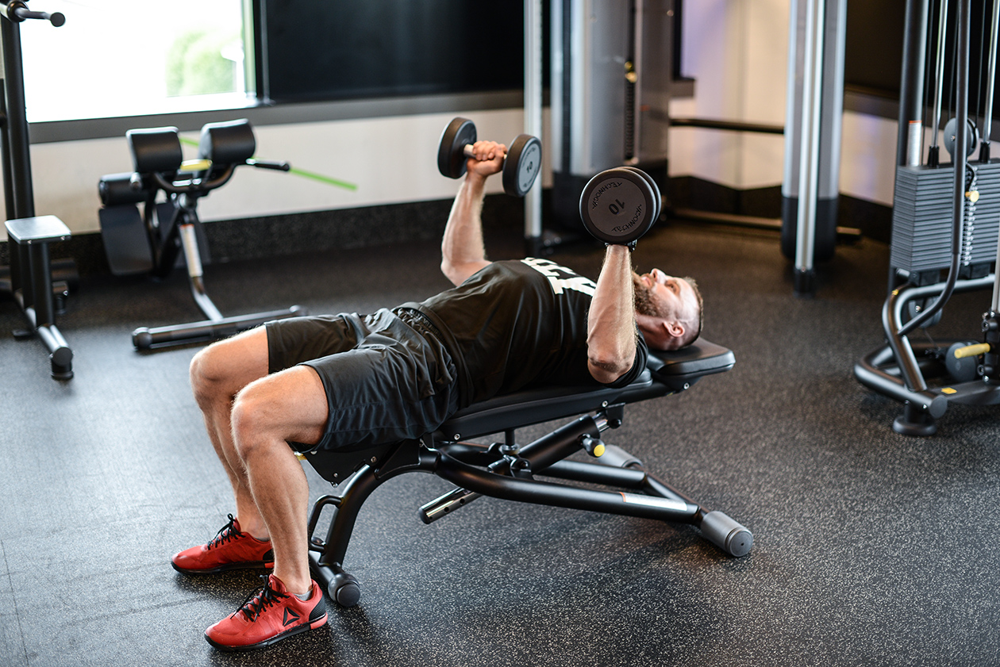
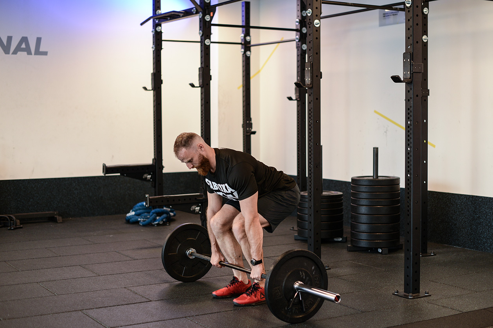
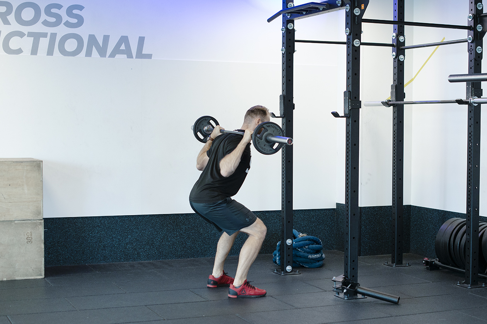
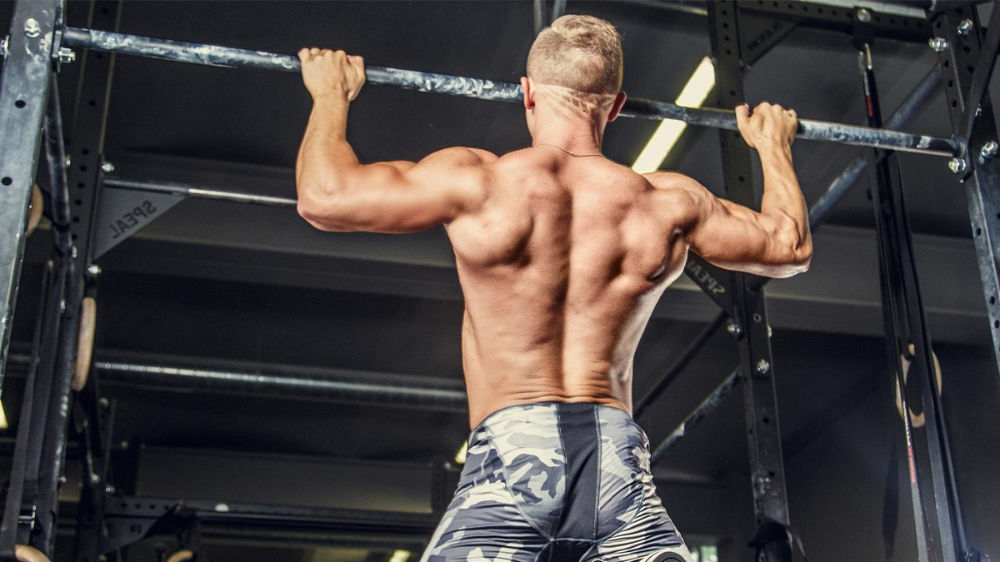
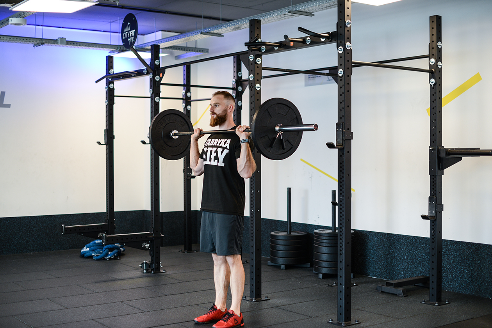
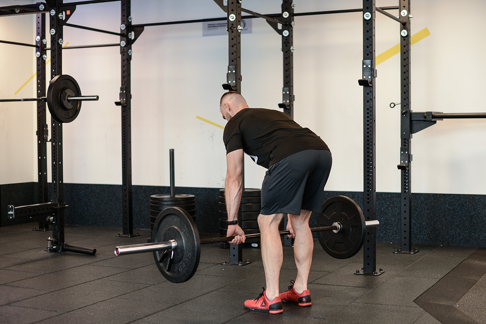

1. Wyciskanie hantli
Podstawowe ćwiczenie na klatkę piersiową. Hantle pozwalają na większy zakres ruchu niż sztanga, co lepiej angażuje mięśnie stabilizujące.
Siłownia
Podstawowe ćwiczenie na klatkę piersiową. Hantle pozwalają na większy zakres ruchu niż sztanga, co lepiej angażuje mięśnie stabilizujące.


Najważniejsze ćwiczenie siłowe angażujące całe ciało. Buduje potężne plecy, pośladki i nogi, poprawiając ogólną sprawność fizyczną.
Fundament treningu nóg. Przysiady nie tylko budują mięśnie, ale również wzmacniają stawy i poprawiają gospodarkę hormonalną organizmu.


Najlepsze ćwiczenie na szerokość pleców. Wymaga dużej siły względnej i świetnie buduje mięśnie najszersze grzbietu oraz bicepsy.
Siłowe wyciskanie sztangi nad głowę w pozycji stojącej. Buduje potężne barki i wymaga ogromnej stabilizacji całego tułowia.


Ćwiczenie budujące grubość pleców. Angażuje mięśnie czworoboczne i równoległoboczne, dbając o zdrową postawę ciała.